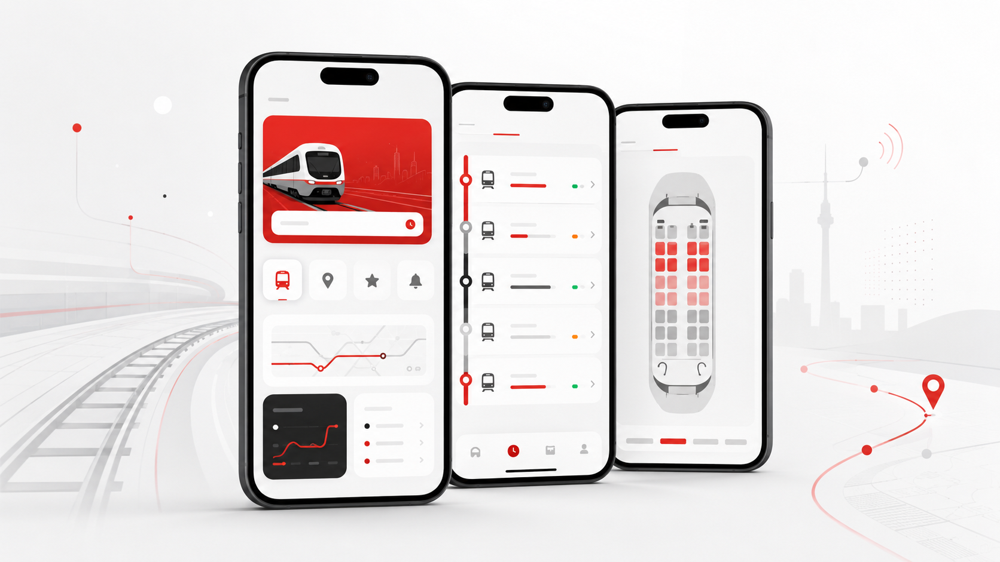
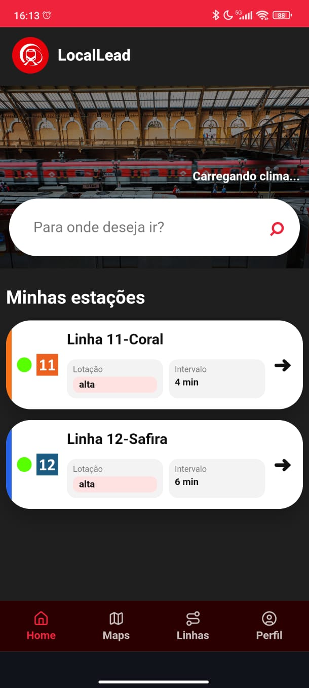
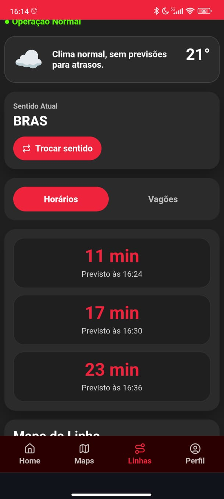
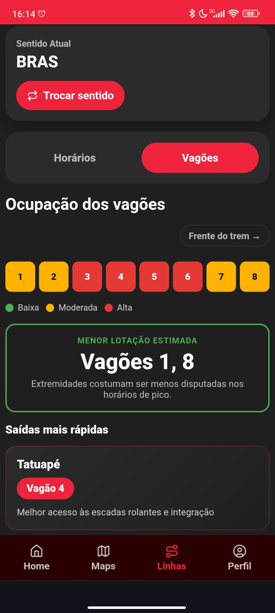

Status e horários das linhas
Apresenta informações úteis sobre as linhas monitoradas e seus horários estimados.
O MVP do LocalLead demonstra como dados operacionais, horários estimados e informações de ocupação podem ser organizados em uma interface simples para apoiar passageiros do transporte ferroviário urbano.

A primeira versão do LocalLead foi pensada para validar a proposta de uma experiência mais clara, rápida e útil para quem depende do transporte ferroviário.
Apresenta informações úteis sobre as linhas monitoradas e seus horários estimados.
Ajuda o usuário a entender quando o próximo trem pode chegar com base nos dados disponíveis.
Mostra uma proposta de orientação sobre ocupação e melhor distribuição dos passageiros.
Interface pensada para uso rápido, direto e acessível pelo celular.
O MVP foi organizado em telas simples para que o passageiro consiga visualizar as informações principais com poucos toques.

Apresenta a entrada do aplicativo e a navegação principal da experiência.

Mostra as linhas monitoradas, informações de operação e estimativas de chegada.

Representa a proposta de visualização de ocupação e orientação para melhor embarque.
O MVP foi construído com uma separação entre interface e servidor. O front-end apresenta a experiência visual ao usuário, enquanto o back-end consulta APIs externas, organiza as respostas e devolve informações mais claras para serem exibidas no aplicativo.
Interface, navegação, telas e experiência mobile.
Rotas, integração com APIs e tratamento dos dados.
Fontes de status operacional, clima e apoio às estimativas.
Recebe as informações em uma interface simples e fácil de interpretar.
O LocalLead utiliza dados disponíveis publicamente e regras internas para demonstrar uma experiência de mobilidade mais preditiva. O objetivo é transformar informações técnicas em respostas simples para o passageiro.
Usada para consultar a situação operacional das linhas e apresentar ao usuário se a linha está normal, reduzida, parcial, paralisada ou encerrada.
Utilizados para relacionar condições de chuva e clima com possíveis impactos no deslocamento.
Base para estimar a chegada do próximo trem quando não há localização real disponível.
Organizam os dados recebidos e transformam informações brutas em mensagens mais compreensíveis.
Centraliza o acesso às principais funcionalidades do aplicativo e apresenta a proposta de mobilidade inteligente.
Exibe informações de linhas, status operacional e estimativas para apoiar o planejamento da viagem.
Apresenta uma proposta de orientação sobre ocupação, ajudando o passageiro a pensar melhor onde embarcar.
O projeto foi pensado para funcionar bem em dispositivos móveis, com possibilidade de instalação como aplicativo.
Por ser um MVP acadêmico, o LocalLead ainda trabalha com limitações técnicas. Algumas funcionalidades dependem de dados oficiais, integrações em tempo real ou futuras parcerias com operadores de transporte.
A localização em tempo real das composições ainda não está disponível no MVP.
Os horários são aproximações baseadas em intervalos e regras iniciais.
A visualização de ocupação dos vagões representa uma proposta de funcionamento.
Algumas informações podem variar conforme disponibilidade, limite ou estabilidade dos serviços utilizados.
O MVP foi construído separando a camada visual da aplicação e a camada responsável pelas integrações e tratamento dos dados.
Acesse o protótipo do LocalLead ou consulte o repositório no GitHub para conhecer a construção técnica do projeto.